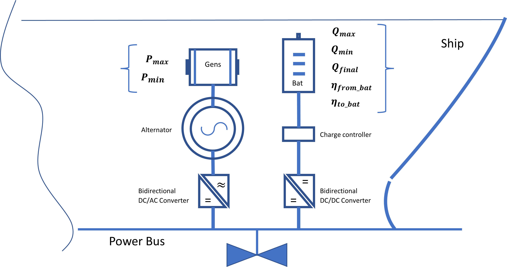

Problem parameters.¶

Optimization parameters¶
The optimization parameters are a set of paramters that have been used along with this optimization problem. These parameters are related to power generation, energy charge and discharge, time, and some additional parameters in a the mathimatical conceptuality of the problem and cost efficiency. The problem results and simulations are based on the values given to these parameters and changing them will trigger different results depending on the physical component of the problem (batterie(s) and genset(s) specifications).
Set of parameters:¶
| Parameter | Definition | Unit |
|---|---|---|
| \(Q_{\mathrm{max}}\) | Maximal energy charge stored in the battery. | kWh |
| \(Q_{\mathrm{init}}\) | Initial energy charge stored in the battery. | kWh |
| \(Q_{\mathrm{final}}\) | Final charge stored in the battery. | kWh |
| \(P_{\mathrm{max}\;}\) | Maximal power that can be generated by the genset. | kW |
| \(P_{\mathrm{min}\;}\) | Minimal power that can be generated by the genset | kW |
| \(Max_{FC}\) | Maximal fuel consumption. | g |
| \(\Delta t\) | Time step in discretization. | h |
| \(t_{\mathrm{max}\;}\) | Max time in simulation. | h |
| \(n\) | Number of time steps in simulation. | - |
| \(t\) | Time vector in simulation (dimension(t)=n). | h |
| \(\eta^{\mathrm{to\_Bat}}\) | Efficiency when charging the battery. | - |
| \(\eta^{\mathrm{from\_Bat}}\) | Efficiency when releasing from the battery. | - |
| \(\eta^{\mathrm{to\_Bat}}\) | Efficiency when charging the battery. | - |
| \(\eta^{\mathrm{to\_Bat}}\) | Efficiency when charging the battery. | - |
| \(fc_{\mathrm{offset}\;}\) | fuel oil consumption offset. | g |
| \(L\) | Vector of pre-defined load profile (must be of same length as time vector). | kWh |